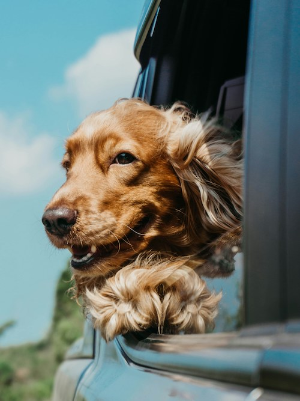

Dogs are better than cats because they are cuter, more playful, and won't hurt you as much. They are way cuter than cats and you can always hang out with them. They are playful and will always want to play or get a toy from you. Also, they wont scratch you, but instead all they'll do is lick you.

Photo by Ja San Miguel on Unsplash